The extra-ring swap-back only looked at tiles directly adjacent to a stranded ring tile, so a hole two rows away — Michigan's, on US states — was unreachable. Generalising it to a guarded BFS relocation that shifts ownership along a path takes US states from 5 protruding ring tiles and 5 empty core tiles to 2 and 2, and congressional districts from 17 to 6, with no split-region or split-group regression anywhere.
Calibration matches the core tile count to the tile budget exactly — on US states, 154 and 154. So every tile the solver places outside the core leaves a core tile empty **one for one**. The protruding tails the user saw near Florida, Texas and the north-west tip, and the four unassigned tiles near Michigan, are not two problems. They are the same problem, and swapback_before_after.png shows the pairing directly: five orange tiles, five red ones.
(What read as "Texas" is Louisiana's ring tile on the bottom edge.)
The cause is in MosaicLayout's extra-ring swap-back, which only ever considered tiles **immediately adjacent** to the stranded ring tile. Michigan's ring tile sits at y ~ 1,208,955 and its nearest empty core tile at y ~ 751,735, with a row spacing of ~ 228,610 — two rows away, so the loop never saw it. The greedy while changed loop chains distance-1 moves but could never make the first hop.
This is not a regression from PR #30; it is visible in that PR's before panel too, and #30's chain-swap repair cannot address it by design — it permutes *which region owns* an occupied tile and never changes the occupied set. That invariant is untouched here.
Measured before changing anything, by enumerating BFS paths from each of the five ring tiles to each reachable empty core tile and scoring the resulting relocation:
| Ring tile | Shortest legal path | Verdict |
|---|---|---|
| Michigan | 2 hops | fixable |
| Louisiana | 4 hops | fixable |
| Maine | 8 hops | fixable |
| Florida | none | **not fixable** — nearest empties are 11 hops away; relocating splits Indiana + North Carolina, or Ohio |
| Washington | none | **not fixable** — nearest empties are 10-11 hops away; relocating splits California + Oregon, or Michigan + Wisconsin |
**3 of 5, not 5 of 5.** Florida and Washington sit at map extremities whose only reachable empty core tiles are clear across the country; shifting ownership along those chains breaks the contiguity of states in between, so the accept-guard correctly declines. Raising the hop bound to 24 does not change this.
In the shipped pipeline the swap-back runs *before* the chain-swap repair, so the greedy order differs slightly from the offline replay above and the pair left standing is Washington and Maine rather than Washington and Florida. The count — three recovered, two not — is the same.
The bound was measured, not picked. Ring tiles left on US states as a function of ring_swapback_max_hops:
| max_hops | 1 | 2 | 4 | 6 | 8 | 10 | 12 | 16 | 24 |
|---|---|---|---|---|---|---|---|---|---|
| ring tiles left | 5 | 4 | 3 | 3 | **2** | 2 | 2 | 2 | 2 |
It saturates at 8 and nothing above 8 buys anything, so 8 is the default. Wall time is unchanged within noise at that bound (see the table below) because BFS stops at the first empty tile it reaches and the first path is almost always accepted.
Each cell reads "before - after".
| Case | Ring tiles used | Empty core tiles | Split regions | Split groups | Regions correct | Wall time |
|---|---|---|---|---|---|---|
| 3x3 synthetic fixture | 0 - 0 | 1 - 1 | 0 - 0 | - | 9/9 - 9/9 | 0.06 s - 0.06 s |
| US states (154 tiles) | 5 - **2** | 5 - **2** | 0 - 0 | - | 49/49 - 49/49 | 1.53 s - 1.53 s |
| Districts (1 tile each) | 17 - **6** | 21 - **10** | 0 - 0 | 0 - 0 | 432/432 - 432/432 | 5.30 s - 5.20 s |
Districts + group_by | 18 - **8** | 22 - **12** | 0 - 0 | 0 - 0 | 432/432 - 432/432 | 5.41 s - 5.13 s |
No metric regresses on any case. The districts cases were not the reported defect but improve the most in absolute terms. The 3x3 fixture is unchanged: its single empty core tile is a calibration rounding artefact with no ring tile to trade against, so there is nothing to reclaim — which is also why "empty core tiles" and "ring tiles used" are not equal on every row. The one-for-one identity holds when calibration lands exactly on the budget, as it does on US states.
BFS runs from each assigned ring tile over *occupied* tiles until it reaches an unassigned core tile, then ownership shifts one step along the path t -> n1 -> ... -> nk -> empty: the empty tile takes n_k's geometry, each n_i takes n_{i-1}'s, n_1 takes the ring tile's, and the ring tile is freed. Every geometry on the path loses one tile and gains one, so **per-region tile counts are preserved exactly** — structurally, not by correction. Asserted in the tests.
Unassigned core tiles strictly decrease by construction, because the path always ends on an empty core tile and the tile freed is outside the core. The only thing needing an explicit guard is topology: a relocation is applied only when it increases neither the split-region nor the split-group count, mirroring PR #30's accept-if-better test. "Never regress" is therefore structural rather than tuned.
This **replaces** the old adjacent-only loop rather than stacking on top of it: the new search at max_hops=1 is exactly the old behaviour. One mechanism, one knob (HungarianOptions.ring_swapback_max_hops, default 8; 0 disables the step entirely), and removing the feature means deleting one function and one call.
MosaicMetrics.n_unassigned_core_tiles counts every core tile left empty. PR #30's hole check counted only *enclosed* unassigned tiles and reported 0 on US states — all five sit in concave boundary pockets, so they passed the check while being plainly visible on the map. The wider count is the honest one; the enclosed count is kept in the figure as the hatched overlay and is 0 in both panels.
Should converged account for n_unassigned_core_tiles? It is currently left out, because that is a public behaviour change: with it folded in, US states would report converged=False where it reports True today, and on inputs where a region genuinely extends past the core there may be no legal relocation that could ever clear it. Flagged for a decision rather than taken.
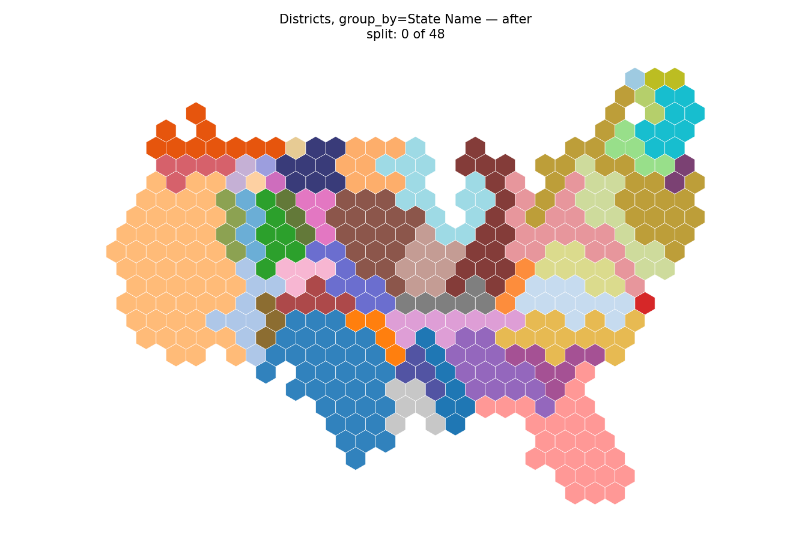
districts_group_by_after.png
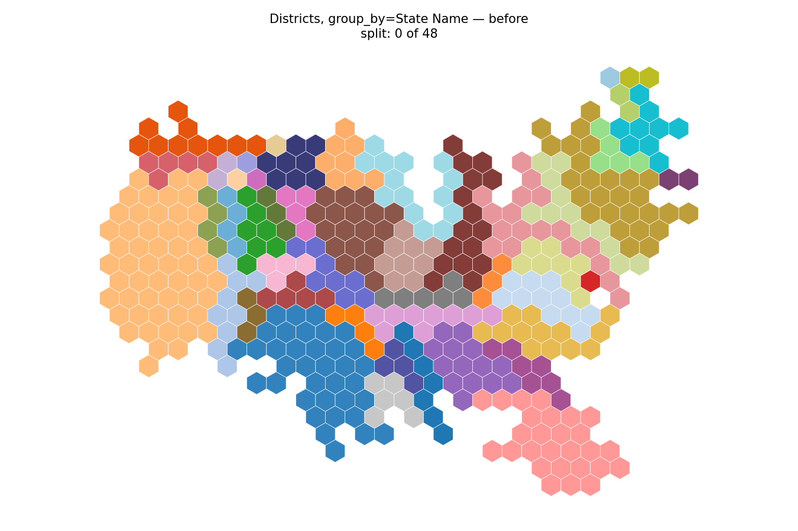
districts_group_by_before.png
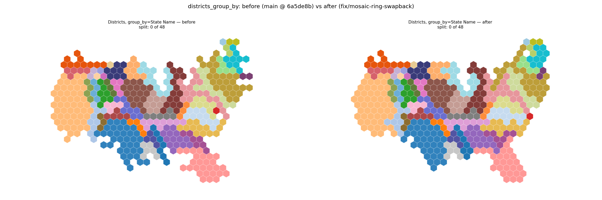
Districts grouped by state. 0 split groups before and after; ring tiles used drop from 18 to 8.
fixture_after.png
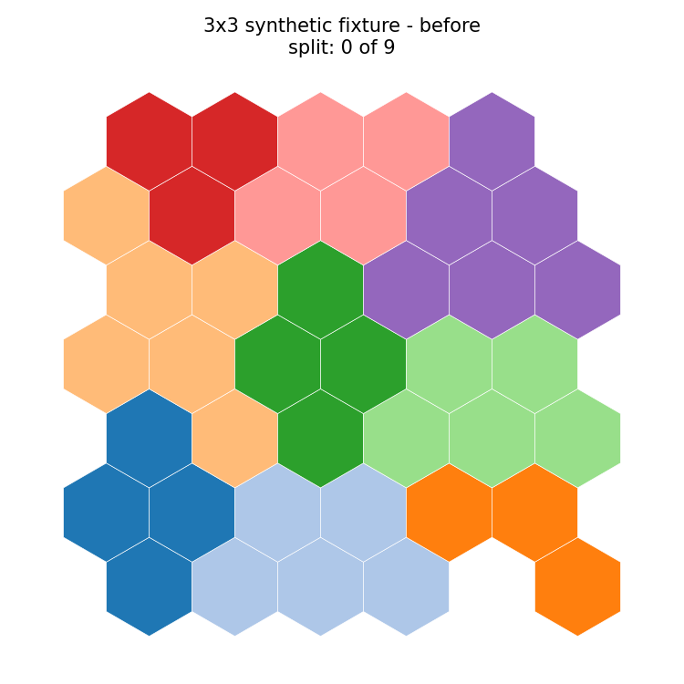
fixture_before.png
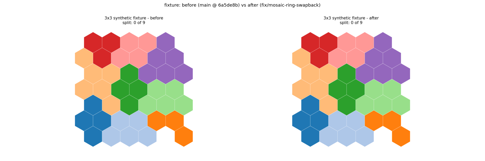
3x3 synthetic fixture, unchanged (it has no ring tiles to reclaim).
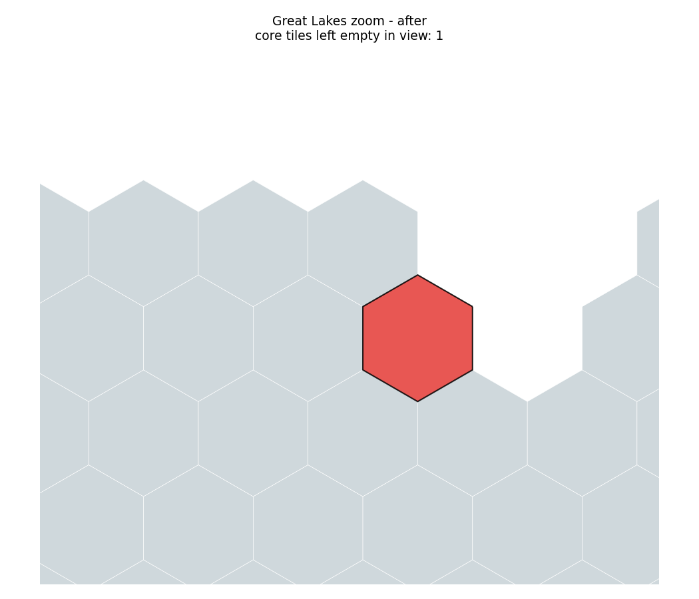
greatlakes_after.png
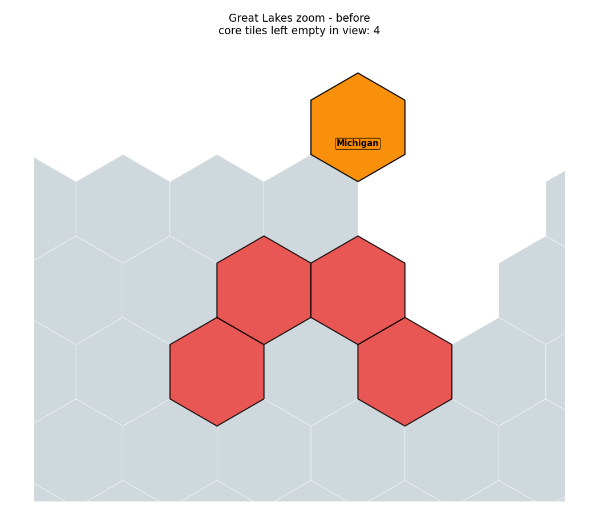
greatlakes_before.png
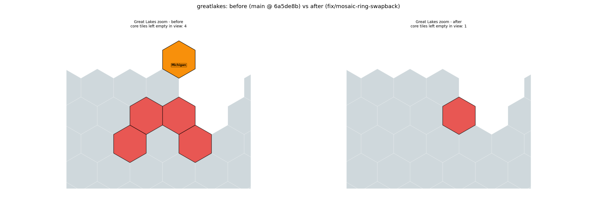
Great Lakes zoom, the cluster the user spotted. 4 empty core tiles before, 1 after.
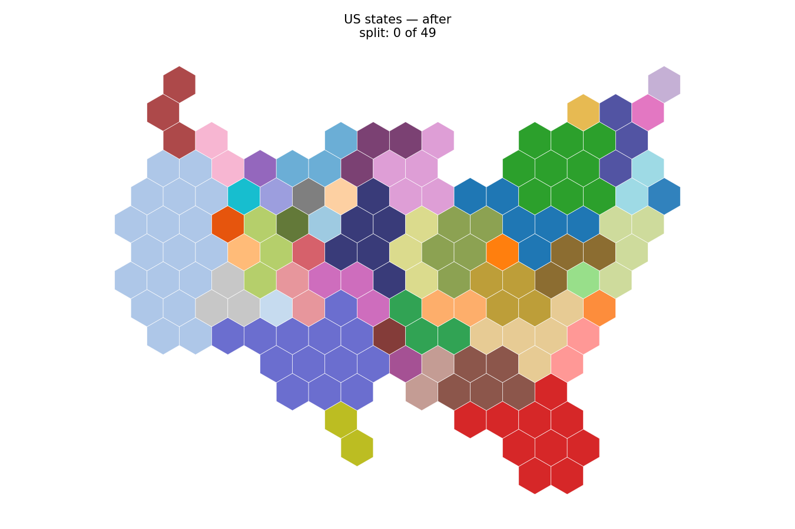
states_after.png
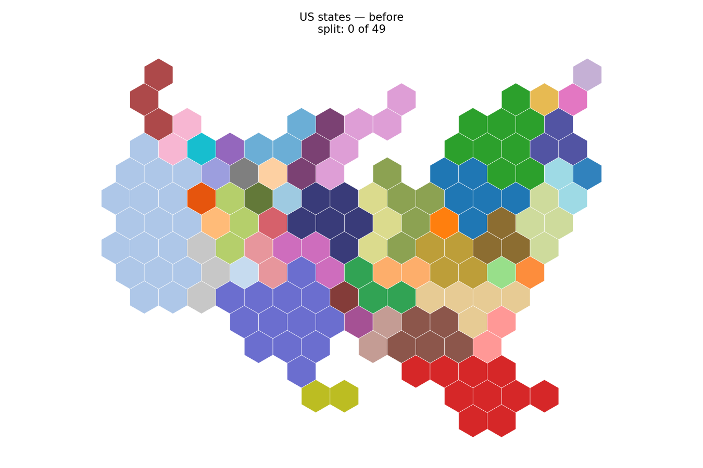
states_before.png
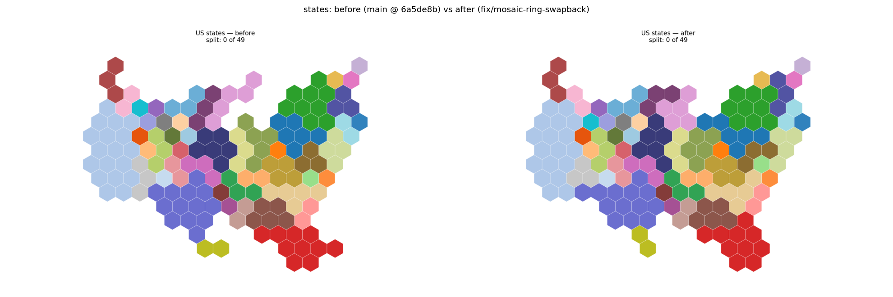
US states coloured by state. 0 split states before and after: the relocation buys back tiles without breaking contiguity.
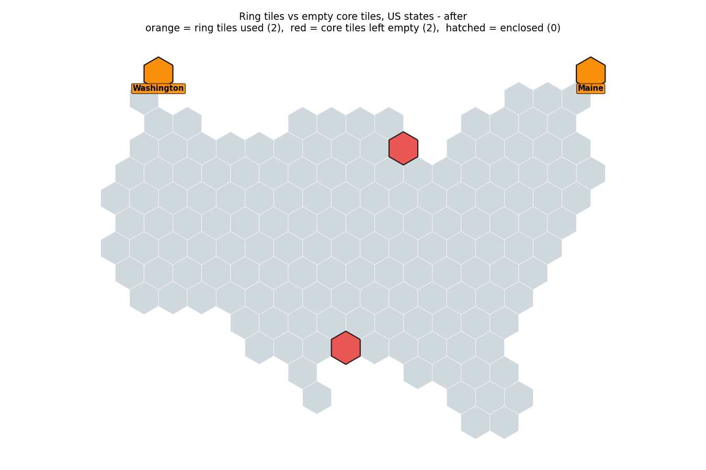
swapback_after.png
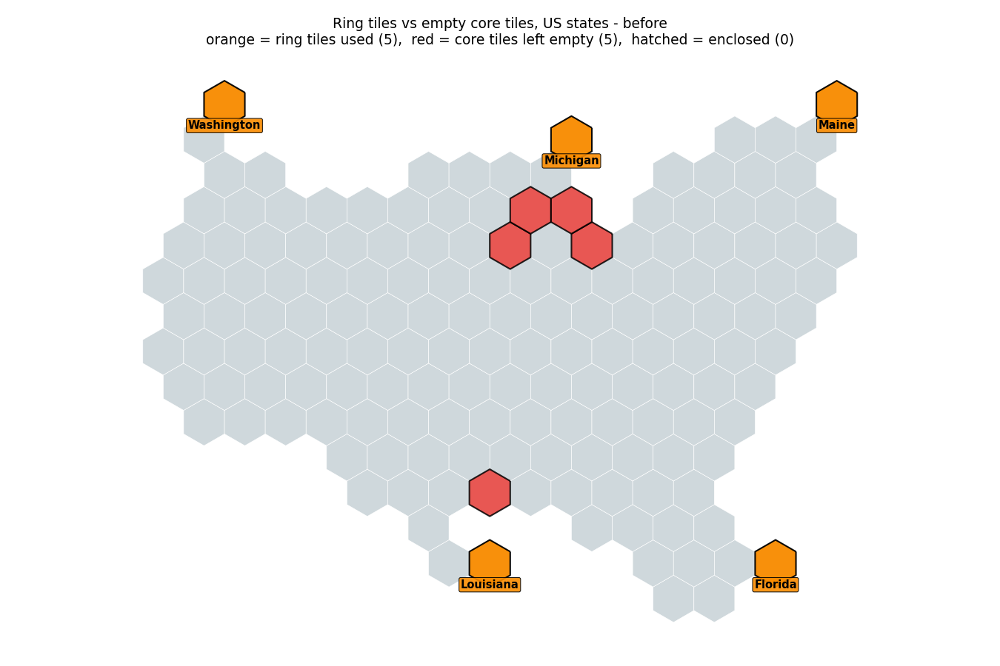
swapback_before.png
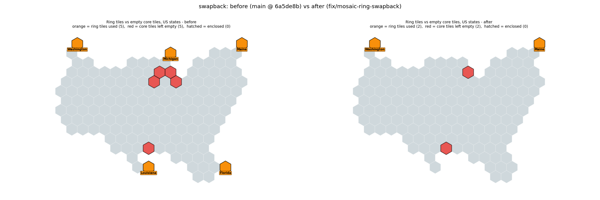
The defect and the fix. Orange = tiles the solver took from an extra ring (labelled with their owner state); red = core tiles left empty. Before: 5 and 5. After: 2 and 2.